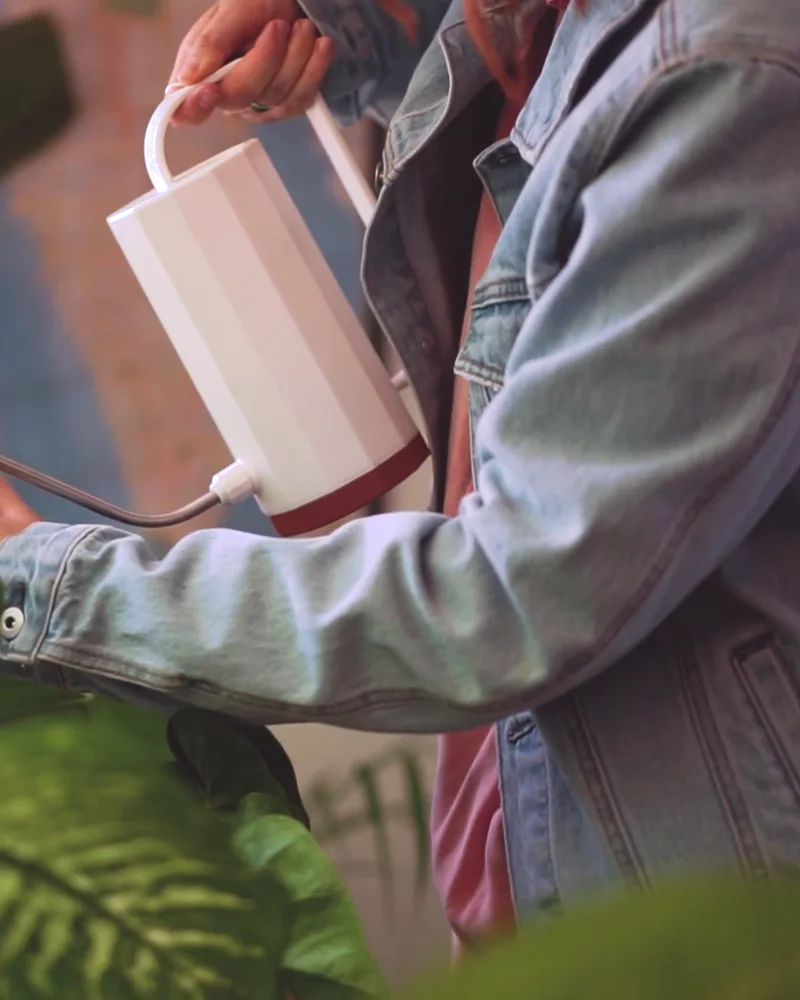

Monthly plant care
A regular home visit to check plant health, water thoughtfully, prune, clean leaves, spot pests early, and adjust care as the seasons change.
Personal home plant care
Monthly care, honest advice, and thoughtful recommendations—grounded in ecology and shaped around your home.
01 Monthly home visits
02 Indoor + outdoor plants
03 Ecology-led advice
Plants rarely need more products or more complicated routines. They need someone to notice the light, the soil, the season—and the quiet signs that something is changing.
Eve Plants brings that attention into your home, so your plants can thrive and you can feel confident caring for them.
For a single struggling plant, a growing collection, or a whole home that needs a calmer care rhythm.
A regular home visit to check plant health, water thoughtfully, prune, clean leaves, spot pests early, and adjust care as the seasons change.
A focused session for plants that look unhappy. We identify likely causes and leave you with clear, realistic next steps.
Recommendations based on your actual light, space, pets, habits, and experience—not just what looks good in the shop.
The monthly ritual
Each visit starts with observation. We look at new growth, soil moisture, leaf condition, light, airflow, and the wider environment. Then we make only the changes your plants actually need.
“Good plant care is less about perfect rules and more about understanding the living system in front of you.”
Eve Plants philosophyEve Plants combines a background in ecology and ecological services with years of practical experience caring for indoor and outdoor plants.
The approach is warm, observant, and never judgmental. Whether you are new to plants or already live in an urban jungle, the goal is the same: help you understand what is growing in your home and care for it with confidence.

Simple from the start
No forms, no complicated plans. Start with a WhatsApp message and a few photos of your space and plants.
Share what you need help with and send a few plant photos on WhatsApp.
We agree on the right kind of visit and choose a time that works for your home.
You get hands-on care, clear advice, and a practical rhythm for what comes next.
A few useful answers
Not at all. Identifying plants and understanding their needs is part of the visit.
Yes. Eve Plants supports both indoor and outdoor plants, with advice shaped around your local conditions and space.
Plants are checked individually, essential care is carried out, and you receive simple guidance for anything to watch between visits.
Yes. Recommendations consider light, available space, pets, care habits, and the look you want to create.
Ready when you are
Send a photo, ask a question, or tell us what your plants need. The conversation starts on WhatsApp.
Message Eve Plants ↗